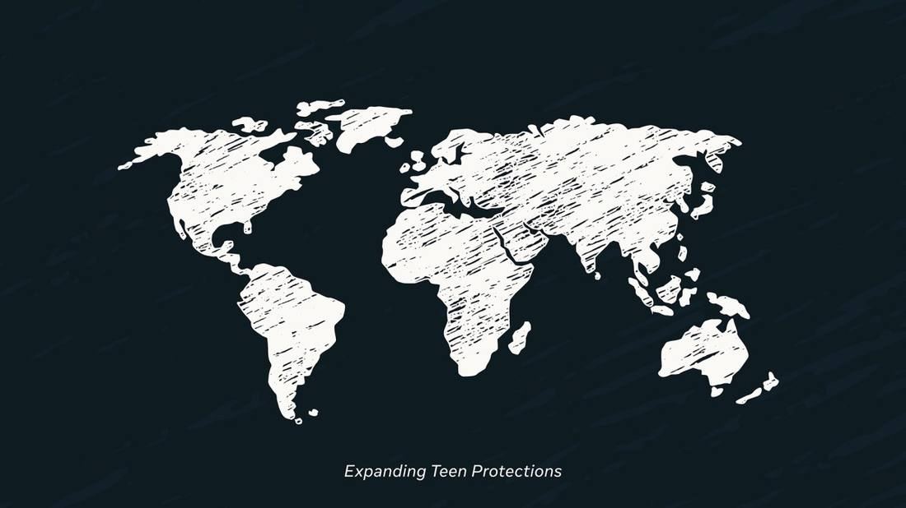
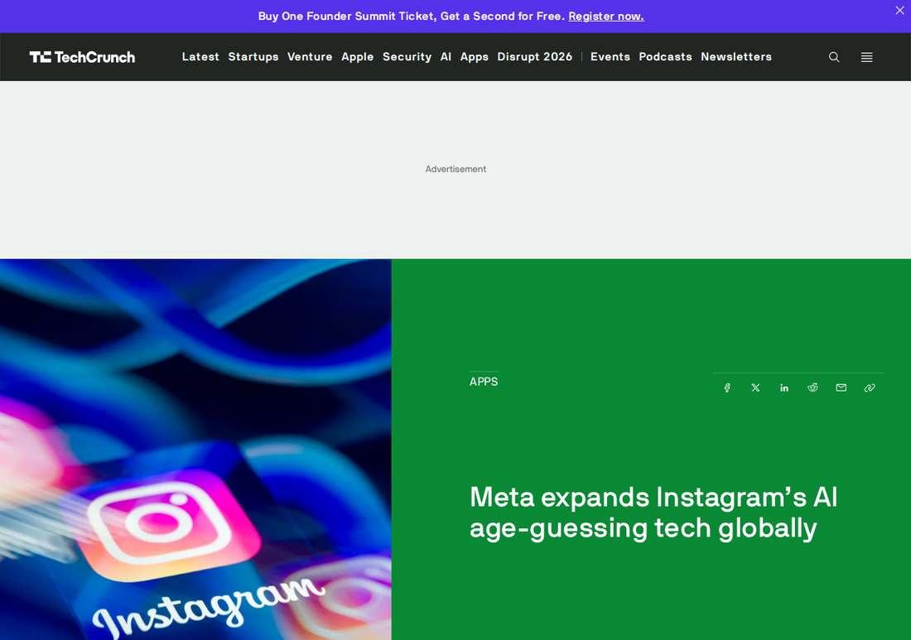

Meta Takes Instagram's AI Age Checks Global, Catching Teens Who Lied About Their Birthday
Meta announced on November 9, 2026 that it is expanding its AI age-estimation technology globally on Instagram, placing accounts it suspects belong to teens aged 13 to 17 into Teen Account protections even when they registered with an adult birthday. Millions more teens will be covered, with no error rate disclosed; the rollout follows August settlements worth up to $18 billion with nearly every U.S. state and territory, and Facebook and Threads follow later.

- 01THE ANNOUNCEMENT — Meta announced on November 9, 2026 that its AI age-estimation technology is expanding globally on Instagram, placing suspected teen accounts into Teen Account protections even when they registered with an adult birthday.
- 02THE MECHANISM — The system analyzes profiles for contextual clues and visual cues, Meta is using Apple's age-range signal in Australia, and U.S. parents get an explanatory in-feed video this month; Facebook's rollout continues and Threads follows later in 2026.
- 03THE WATCHPOINT — Whether the inference system proves accurate in practice, with Meta disclosing no error rate, and whether the app-store age signal becomes the standard Meta is calling for.
WHAT HAPPENEDWhat Happened
Meta announced on November 9, 2026 that it is expanding its AI age-estimation technology globally on Instagram, using artificial intelligence to find accounts it suspects belong to teenagers and placing them into Teen Account protections even when the account was registered with an adult birthday. Meta said millions more teens worldwide will receive the built-in protections, which limit who can contact them, the content they see, and their time on the apps. The company gave no tally of how many accounts have been moved so far and no error or false-positive rate for the system.
The technology works by inference rather than self-declaration. Meta's tools analyze entire profiles for contextual clues, such as birthday celebrations or mentions of school grades, across posts, comments, bios, and captions, and look at visual cues from photos and videos, including a person's height or bone structure. Meta has previously said the system does not create facial fingerprints or identify who is in a photo. In Australia, Meta has also begun using Apple's age-range signal, which the App Store passes to developers when a parent sets up a teen's device. Parents in the United States will begin seeing an in-feed Instagram video this month explaining the approach.
The rollout completes a schedule Meta set out over the past year. The company introduced the technology in April 2025, extended it to Instagram in all 27 European Union member states and Brazil in May 2026, and expanded teen content settings globally in June 2026. Facebook's rollout continues, and Threads is due a similar global launch later in 2026. The expansion builds on Meta's agreement with 52 bipartisan state attorneys general and follows August settlements worth up to $18 billion resolving lawsuits alleging its platforms harm teens, under which Meta agreed to improve how it identifies teens and children under 13.
WHY IT MATTERSAge assurance is moving from self-declaration to inference
The important shift here is not the feature, it is the method. For years, age gates trusted the birthday typed at signup, and teenagers who wanted adult accounts simply typed an adult date. Meta's system instead infers age from behavior and images, then overrides the declared birthday. That closes the loophole, but it replaces a check the user controls with a judgment the user cannot see, and Meta publishes no accuracy figure, so nobody outside the company can say how often it gets a 17-year-old right or a 19-year-old wrong.
The Australia detail points to the alternative Meta itself prefers. Apple's age-range signal, passed from the App Store when a parent configures a device, is a verified fact rather than an inference, and Meta says one signal shared consistently across apps would be far more effective and privacy-preserving than every platform guessing alone. The company is using the signal voluntarily while calling for legislation to make it standard. The tension is plain: the inference engine is live globally today, while the cleaner signal depends on app stores and lawmakers catching up.
WHY IT MATTERSA settlement, not a product launch, is driving this
Read the timing, not just the feature. The global rollout arrives three months after settlements worth up to $18 billion with nearly every U.S. state and territory, in which Meta agreed to strengthen how it identifies teens. The announcement frames the expansion as building on those commitments, and the product follows the legal calendar as much as the engineering one.
The watchpoint is what happens when the system is wrong. A false positive puts an adult into a restricted teen account; a false negative leaves a teen unprotected, and neither failure is visible in Meta's announcement, which reports no error rate, no appeal volume, and no per-country effective dates. The company also used the announcement to call on TikTok and YouTube to adopt the same practices, a move that spreads the standard while spreading the scrutiny. The measure of this rollout will be the correction rate, not the launch.
SIGNAL JUDGMENT — ANALYSISMeta closed the fake-birthday loophole, and the accuracy question is now the story
Tokenta Signal's judgment: The important shift is the method, not the feature. Age gates trusted the birthday typed at signup, and teenagers who wanted adult accounts typed an adult date. Meta's system infers age from behavior and images and overrides the declared birthday, which closes the loophole and replaces a check the user controls with a judgment the user cannot see. Meta publishes no accuracy figure, no false-positive rate, and no appeal volume, so the rollout's real measure is its correction rate, not its launch. The Australia detail points to the cleaner path Meta itself prefers: Apple's verified age-range signal, shared consistently across apps, rather than every platform guessing alone. And the timing matters: this arrives three months after settlements worth up to $18 billion in which Meta agreed to strengthen teen identification, so the product follows the legal calendar as much as the engineering one. The expansion is real and global; the evidence for how well it works is still missing.
WHAT REMAINS UNCERTAINWhat Remains Uncertain
EVIDENCEEvidence

Meta's November 9, 2026 announcement, read in full on its About blog: AI age-estimation technology is expanding globally on Instagram, placing accounts suspected to belong to teens aged 13 to 17 into Teen Account protections even when they registered with an adult birthday, with millions more teens covered; Apple age-range signals are being used in Australia, an explanatory video for U.S. parents is coming this month, Facebook's rollout continues, and Threads follows later in 2026. TechCrunch's same-day report confirms the announcement and the August settlements worth up to $18 billion with nearly every U.S. state and territory.
PRIMARY SOURCESPrimary Sources
- Meta: Expanding Teen Account Protections to Teens Around the World
https://about.fb.com/news/2026/11/expanding-teen-account-protections-to-teens-around-the-world/ - TechCrunch: Meta expands Instagram's AI age-guessing tech globally
https://techcrunch.com/2026/11/09/meta-expands-instagrams-ai-age-guessing-tech-globally/ - BetaNews: Instagram takes AI age checks worldwide to find teens
https://betanews.com/article/instagram-ai-age-checks/